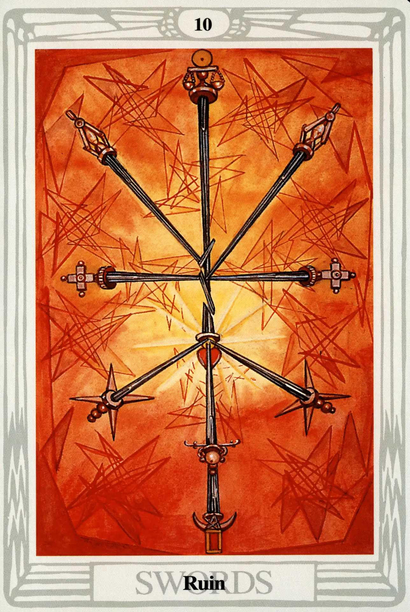

Swords
Ten of Swords
Ruin

(Sol in Gemini)
20° to 30° Gemini
June 11 to June 20
Original Title: Lord of Ruin.
Golden Dawn Model: Four hands holding eight swords, as in the Nine of Swords, the points falling away from each other. Two hands hold two swords crossed in the center, as though their junction had disunited the others. No rose, flower, or bud is shown.
Prince Scale for Malkuth: Citrine; Olive; Russet; and Black; all with Gold, flecked Black.
The Four Scales for Sol: Orange; Gold Yellow; Rich Amber; Amber, rayed Red.
The Four Scales for Gemini: Orange; Pale Mauve; New Yellow leather; Reddish Grey inclined to Mauve.
Formula: 10 (Malkuth) of Swords (Yetzirah) + Sol in Gemini = RUIN
Can you find ten swords in the Ten of Swords? It's very difficult. Crowley tries to help us:
The hilts of the Swords occupy the positions of the Sephiroth, but points One to Five and Seven to Nine touch and shatter the bright central sword (six) which represents the Sun, the Heart, the child of Chokmah and Binah. The tenth sword is also in splinters.”
There are three swords that form the middle pillar, the lowest having a crescent Moon on the handle. The next sword is placed upon the blade of the first and has an orb as part of its handle. The blade of the second sword is place upon the heart-shaped pommel of the central sword, whose blade is broken into three pieces.
It is difficult to put a good spin on this card. Harris herself reports, “I have done the 10 of Swords & promptly Russia takes up arms.” Along with the other tens, the Ten of Swords can't degenerate any lower without completely changing suits. Sol in Mercury-ruled Gemini brings a complete identification with the mind and the intellect, which, in this card, are in the very process of being destroyed. “It is the ruin of the Intellect,” Crowley intones, “and even of all mental and moral qualities.” Ouch!